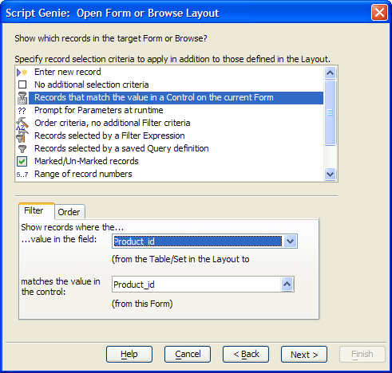

Using Action Script to Select a Record and Display a Form
Button3 runs an Action Script that is partially controlled by a value on the form. The script has a single action that displays information about the product selected on the invoice line item in the embedded browse. Since they are both views of the same set, the Product_id field is synchronized with the browse.

The script opens the Products form and selects the record with the expression defined in the form above. It took only three parameters to define the filter:
The Specify record selection criteria list selection is "Records that match the value in a Control on the current Form".
The Show records where the value in the field list selection is "Product_id".
The matches the value in the control list selection is also "Product_id".
See Also
Using Xbasic to Select a Record and Display a Form